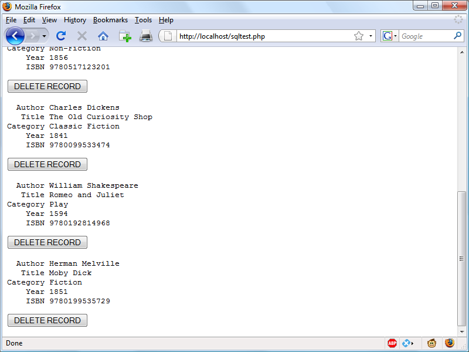

Accessing MySQL Using PHP
If you worked through the previous chapters, you’re proficient in using both MySQL and PHP. In this chapter, you will learn how to integrate the two by using PHP’s built-in functions to access MySQL.
Querying a MySQL Database with PHP
The reason for using PHP as an interface to MySQL is to format the results of SQL queries in a form visible in a web page. As long as you can log into your MySQL installation using your username and password, you can also do so from PHP.
However, instead of using MySQL’s command line to enter instructions and view output, you will create query strings that are passed to MySQL. When MySQL returns its response, it will come as a data structure that PHP can recognize instead of the formatted output you see when you work on the command line. Further PHP commands can retrieve the data and format it for the web page.
In previous editions of the book, this chapter introduced the old mysql extension for accessing a MySQL database, before then moving onto discussing the newer mysqli extensions in the following chapter. But time marches on, as they say, and by now there should be very few legacy installations using the old code, so we’ll just go straight in and look at how to use this newer extension—which is pretty much standard everywhere nowadays.
The Process
The process of using MySQL with PHP is as follows:
1. Connect to MySQL and select the database to use.
2. Build a query string.
3. Perform the query.
4. Retrieve the results and output them to a web page.
5. Repeat steps 2 to 4 until all desired data has been retrieved.
6. Disconnect from MySQL.
We’ll work through these sections in turn, but first it’s important to set up your login details in a secure manner so people snooping around on your system have trouble getting access to your database.
Creating a Login File
Most websites developed with PHP contain multiple program files that will require access to MySQL and will thus need the login and password details. Therefore, it’s sensible to create a single file to store these and then include that file wherever it’s needed. Example 10-1 shows such a file, which I’ve called login.php.
Example 10-1. The login.php file
<?php // login.php
$hn = 'localhost';
$db = 'publications';
$un = 'username';
$pw = 'password';
?>
Type the example, replacing username and password with the values you use for your MySQL database, and save it to the document root directory you set up in Chapter 2. We’ll be making use of the file shortly.
The hostname localhost should work as long as you’re using a MySQL database on your local system, and the database publications should work if you’re typing the examples I’ve used so far.
The enclosing <?php and ?> tags are especially important for the login.php file in Example 10-1, because they mean that the lines between can be interpreted only as PHP code. If you were to leave them out and someone were to call up the file directly from your website, it would display as text and reveal your secrets. But, with the tags in place, all that person will see is a blank page. The file will correctly include in your other PHP files.
The $hn variable will tell PHP which computer to use when connecting to a database. This is required, because you can access MySQL databases on any computer connected to your PHP installation, and that potentially includes any host anywhere on the Web. However, the examples in this chapter will be working on the local server. So, in place of specifying a domain such as mysql.myserver.com, you can just use the word localhost (or the IP address 127.0.0.1).
The database we’ll be using, $db, is the one called publications, which we created in Chapter 8 (or may have been provided to you by your server administrator—in which case you have to modify login.php accordingly).
Another benefit of keeping these login details in a single place is that you can change your password as frequently as you like and there will be only one file to update when you do, no matter how many PHP files access MySQL.
Connecting to a MySQL Database
Now that you have the login.php file saved, you can include it in any PHP files that will need to access the database by using the require_once statement. This is preferable to an include statement, as it will generate a fatal error if the file is not found. And believe me, not finding the file containing the login details to your database is a fatal error.
Also, using require_once instead of require means that the file will be read in only when it has not previously been included, which prevents wasteful duplicate disk accesses. Example 10-2 shows the code to use.
Example 10-2. Connecting to a MySQL server with mysqli
<?php
require_once 'login.php';
$conn = new mysqli($hn, $un, $pw, $db);
if ($conn->connect_error) die($conn->connect_error);
?>
This example creates a new object called $conn by calling a new instance of the mysqli method, passing all the values retrieved from the login.php file. Error checking is achieved by referencing the $conn->connect_error property.
The -> operator indicates that the item on the right is a property or method of the object on the left. In this case, if connect_error has a value, then there was an error, so we call the die function and display that property, which details the connection error.
The $conn object is used in the following examples to access the MySQL database.
The die function is great for when you are developing PHP code, but of course you will want more user-friendly error messages on a production server. In this case, you won’t abort your PHP program, but format a message that will be displayed when the program exits normally, perhaps something like this:
function mysql_fatal_error($msg)
{
$msg2 = mysql_error();
echo <<< _END
We are sorry, but it was not possible to complete
the requested task. The error message we got was:
<p>$msg: $msg2</p>
Please click the back button on your browser
and try again. If you are still having problems,
please <a href="mailto:admin@server.com">email
our administrator</a>. Thank you.
_END;
}
Building and executing a query
Sending a query to MySQL from PHP is as simple as issuing it using the query method of a connection object. Example 10-3 shows you how to use it.
Example 10-3. Querying a database with mysqli
<?php
$query = "SELECT * FROM classics";
$result = $conn->query($query);
if (!$result) die($conn->error);
?>
Here the variable $query is assigned a string containing the query to be made, and then passed to the query method of the $conn object, which returns a result that we place in the object $result. If $result is FALSE, there was a problem and the error property of the connection object will contain the details, so the die function is called to display that error.
All the data returned by MySQL is now stored in an easily interrogatable format in the $result object.
Fetching a result
Once you have an object returned in $result, you can use it to extract the data you want, one item at a time, using the fetch_assoc method of the object. Example 10-4 combines and extends the previous examples into a program that you can type and run yourself to retrieve these results (as depicted in Figure 10-1 ). I suggest that you save this script using the filename query.php (or use the file saved in the free archive of files available at lpmj.net ).
Example 10-4. Fetching results one cell at a time
<?php // query.php
require_once 'login.php';
$conn = new mysqli($hn, $un, $pw, $db);
if ($conn->connect_error) die($conn->connect_error);
$query = "SELECT * FROM classics";
$result = $conn->query($query);
if (!$result) die($conn->error);
$rows = $result->num_rows;
for ($j = 0 ; $j < $rows ; ++$j)
{
$result->data_seek($j);
echo 'Author: '. $result->fetch_assoc()['author']. '<br>';
$result->data_seek($j);
echo 'Title: '. $result->fetch_assoc()['title']. '<br>';
$result->data_seek($j);
echo 'Category: '. $result->fetch_assoc()['category']. '<br>';
$result->data_seek($j);
echo 'Year: '. $result->fetch_assoc()['year']. '<br>';
$result->data_seek($j);
echo 'ISBN: '. $result->fetch_assoc()['isbn']. '<br><br>';
}
$result->close();
$conn->close();
?>
Figure 10-1. The output from the query.php program in Example 10-4
Here, to seek to the correct row each time around the loop, we call the data_seek method of $result before fetching each item of data. Then we call the fetch_assoc method to retrieve the value stored in each cell, and output the result using echo statements.
You will probably agree that all this data seeking is rather cumbersome and that there ought to be a more efficient method of achieving the same result. And, indeed, there is a better method, which is to extract a row at a time.
In Chapter 9, I talked about First, Second, and Third Normal Form, so you may have now noticed that the classics table doesn’t satisfy these, because both author and book details are included within the same table. That’s because we created this table before encountering normalization. However, for the purposes of illustrating access to MySQL from PHP, reusing this table avoids the hassle of typing in a new set of test data, so we’ll stick with it for the time being.
Fetching a row
To fetch one row at a time, replace the for loop from Example 10-4 with the one highlighted in bold in Example 10-5, and you will find that you get exactly the same result that was displayed in Figure 10-1. You may wish to save this revised file using the name fetchrow.php.
Example 10-5. Fetching results one row at a time
<?php //fetchrow.php
require_once 'login.php';
$conn = new mysqli($hn, $un, $pw, $db);
if ($conn->connect_error) die($conn->connect_error);
$query = "SELECT * FROM classics";
$result = $conn->query($query);
if (!$result) die($conn->error);
$rows = $result->num_rows;
for ($j = 0 ; $j < $rows ; ++$j)
{
$result->data_seek($j);
$row = $result->fetch_array(MYSQLI_ASSOC);
echo 'Author: '. $row['author']. '<br>';
echo 'Title: '. $row['title']. '<br>';
echo 'Category: '. $row['category']. '<br>';
echo 'Year: '. $row['year']. '<br>';
echo 'ISBN: '. $row['isbn']. '<br><br>';
}
$result->close();
$conn->close();
?>
In this modified code, only one-fifth of the interrogations of the $result object are made (compared to the previous example), and only one seek into the object is made in each iteration of the loop, because each row is fetched in its entirety via the fetch_array method. This returns a single row of data as an array, which is then assigned to the array $row.
The fetch_array method can return three types of array according to the value passed to it:
MYSQLI_NUM
Numeric array. Each column appears in the array in the order in which you defined it
when you created (or altered) the table. In our case, the zeroth element of the array
contains the Author column, element 1 contains the Title, and so on.
MYSQLI_ASSOC
Associative array. Each key is the name of a column. Because items of data are refer
enced by column name (rather than index number), use this option where possible in
your code to make debugging easier and help other programmers better manage
your code.
MYSQLI_BOTH
Associative and numeric array.
Associative arrays are usually more useful than numeric ones because you can refer to each column by name, such as $row['author'], instead of trying to remember where it is in the column order. So this script uses an associative array, leading us to pass MYSQLI_ASSOC.
Closing a connection
PHP will eventually return the memory it has allocated for objects after you have finished with the script, so in small scripts, you don’t usually need to worry about releasing memory yourself. However, if you’re allocating a lot of result objects or fetching large amounts of data, it can be a good idea to free the memory you have been using to prevent problems later in your script.
This becomes particularly important on higher-traffic pages, because the amount of memory consumed in a session can rapidly grow. Therefore, note the calls to the close methods of the objects $result and $conn in the preceding scripts, as soon as each object is no longer needed, like this:
$result->close();
$conn->close();
Ideally, you should close each result object when you have finished using it, and then close the connection object when your script will not be accessing MySQL anymore. This best practice ensures that resources are returned to the system as quickly as possible to keep MySQL running optimally, and alleviates doubt over whether PHP will return unused memory in time for when you next need it.
A Practical Example
It’s time to write our first example of inserting data in and deleting it from a MySQL table using PHP. I recommend that you type Example 10-6 and save it to your web development directory using the filename sqltest.php. You can see an example of the program’s output in Figure 10-2. Example 10-6 creates a standard HTML form. Chapter 11 explains forms in detail, but in this chapter I take form handling for granted and just deal with database interaction.
Example 10-6. Inserting and deleting using sqltest.php
<?php // sqltest.php
require_once 'login.php';
$conn = new mysqli($hn, $un, $pw, $db);
if ($conn->connect_error) die($conn->connect_error);
if (isset($_POST['delete']) && isset($_POST['isbn']))
{
$isbn = get_post($conn, 'isbn');
$query = "DELETE FROM classics WHERE isbn='$isbn'";
$result = $conn->query($query);
if (!$result) echo "DELETE failed: $query<br>".
$conn->error. "<br><br>";
}
if (isset($_POST['author']) &&
isset($_POST['title']) &&
isset($_POST['category']) &&
isset($_POST['year']) &&
isset($_POST['isbn']))
{
$author = get_post($conn, 'author');
$title = get_post($conn, 'title');
$category = get_post($conn, 'category');
$year = get_post($conn, 'year');
$isbn = get_post($conn, 'isbn');
$query = "INSERT INTO classics VALUES".
"('$author', '$title', '$category', '$year', '$isbn')";
$result = $conn->query($query);
if (!$result)
echo "INSERT failed: $query<br>".
$conn->error. "<br><br>";
}
echo <<<_END
<form action="sqltest.php" method="post"><pre>
Author <input type="text" name="author">
Title <input type="text" name="title">
Category <input type="text" name="category">
Year <input type="text" name="year">
ISBN <input type="text" name="isbn">
<input type="submit" value="ADD RECORD">
</pre></form>
_END;
$query = "SELECT * FROM classics";
$result = $conn->query($query);
if (!$result) die ("Database access failed: ". $conn->error);
$rows = $result->num_rows;
for ($j = 0 ; $j < $rows ; ++$j)
{
$result->data_seek($j);
$row = $result->fetch_array(MYSQLI_NUM);
echo <<<_END
<pre>
Author $row[0]
Title $row[1]
Category $row[2]
Year $row[3]
ISBN $row[4]
</pre>
<form action="sqltest.php" method="post">
<input type="hidden" name="delete" value="yes">
<input type="hidden" name="isbn" value="$row[4]">
<input type="submit" value="DELETE RECORD"></form>
_END;
}
$result->close();
$conn->close();
function get_post($conn, $var)
{
return $conn->real_escape_string($_POST[$var]);
}
?>
Figure 10-2. The output from Example 10-6, sqltest.php
At over 80 lines of code, this program may appear daunting, but don’t worry—you’ve already covered many of them in Example 10-5, and what the code does is actually quite simple.
It first checks for any inputs that may have been made and then either inserts new data into the table classics of the publications database or deletes a row from it, according to the input supplied. Regardless of whether there was input, the program then outputs all rows in the table to the browser. So let’s see how it works.
The first section of new code starts by using the isset function to check whether values for all the fields have been posted to the program. Upon confirmation, each line within the if statement calls the function get_post, which appears at the end of the program. This function has one small but critical job: fetching input from the browser.
The $_POST Array
I mentioned in an earlier chapter that a browser sends user input through either a Get request or a Post request. The Post request is usually preferred (because it avoids placing unsightly data in the browser’s address bar), and so we use it here. The web server bundles up all of the user input (even if the form was filled out with a hundred fields) and puts in into an array named $_POST.
$_POST is an associative array, which you encountered in Chapter 6. Depending on whether a form has been set to use the Post or the Get method, either the $_POST or the $_GET associative array will be populated with the form data. They can both be read in exactly the same way.
Each field has an element in the array named after that field. So, if a form contained a field named isbn, the $_POST array contains an element keyed by the word isbn. The PHP program can read that field by referring to either $_POST['isbn'] or $_POST["isbn"] (single and double quotes have the same effect in this case).
If the $_POST syntax still seems complex to you, rest assured that you can just use the convention I’ve shown in Example 10-6, copy the user’s input to other variables, and forget about $_POST after that. This is normal in PHP programs: they retrieve all the fields from $_POST at the beginning of the program and then ignore it.
There is no reason to write to an element in the $_POST array. Its only purpose is to communicate information from the browser to the program, and you’re better off copying data to your own vari‐ ables before altering it.
So, back to the get_post function, which passes each item it retrieves through the real_escape_string method of the connection object to strip out any characters that a hacker may have inserted in order to break into or alter your database, like this:
function get_post($conn, $var)
{
return $conn->real_escape_string($_POST[$var]);
}
Deleting a Record
Prior to checking whether new data has been posted, the program checks whether the variable $_POST['delete'] has a value. If so, the user has clicked the DELETE RECORD button to erase a record. In this case, the value of $isbn will also have been posted.
As you’ll recall, the ISBN uniquely identifies each record. The HTML form appends the ISBN to the DELETE FROM query string created in the variable $query, which is then passed to the query method of the $conn object to issue it to MySQL.
If $_POST['delete']) is not set (and so there is no record to be deleted), $_POST['author']) and other posted values are checked. If they have all been given values, then $query is set to an INSERT INTO command, followed by the five values to be inserted. The string is then passed to the query method, which upon completion returns either TRUE or FALSE. If FALSE is returned, the error message held in the error property of the $conn object is displayed, like this:
if (!$result) echo "INSERT failed: $query<br>".
$conn->error. "<br><br>";
Displaying the Form
Next we get to the part of code that displays the little form at the top of Figure 10-2. You should recall the echo <<<_END... _END structure from previous chapters, which outputs everything between the _END tags.
Instead of the echo command, the program could also drop out of PHP using ?>, issue the HTML, and then reenter PHP processing with <?php. Whichever style used is a matter of programmer preference, but I always recommend staying within PHP code for these reasons:
• It makes it very clear when debugging (and also for other users) that everything within a .php file is PHP code. Therefore, there is no need to go hunting for dropouts to HTML.
• When you wish to include a PHP variable directly within HTML, you can just type it. If you had dropped back to HTML, you would have had to temporarily reenter PHP processing, access the variable, and then drop back out again.
The HTML form section simply sets the form’s action to sqltest.php. This means that when the form is submitted, the contents of the form fields will be sent to the file sqltest.php, which is the program itself. The form is also set up to send the fields as a Post rather than a Get request. This is because Get requests are appended to the URL being submitted to and can look messy in your browser. They also allow users to easily modify submissions and try to hack your server. Therefore, whenever possible, you should use Post submissions, which also have the benefit of hiding the posted data from view.
Having output the form fields, the HTML displays a Submit button with the name ADD RECORD and closes the form. Note the <pre> and </pre> tags here, which have been used to force a monospaced font and allow all the inputs to line up neatly. The carriage returns at the end of each line are also output when inside <pre> tags.
Querying the Database
Next, the code returns to the familiar territory of Example 10-5, where a query is sent to MySQL asking to see all the records in the classics table, like this:
$query = "SELECT * FROM classics";
$result = $conn->query($query);
After that, $rows is set to a value representing the number of rows in the table: $rows = $result->num_rows;
Using the value in $rows, a for loop is then entered to display the contents of each row. Within each iteration of the loop, the data_seek method of the $result object is called to seek to the relevant items of data we’re interested in, like this:
$result->data_seek($j);
Then the array $row is populated with a row of results by calling the fetch_array method of $result, passing it the constant value MYSQLI_NUM, which forces the return of a numeric (rather than associative) array, like this:
$row = $result->fetch_array(MYSQLI_NUM);
With the data in $row, it’s now a simple matter to display it within the heredoc echo statement that follows in which I have chosen to use a <pre> tag to line up the display of each record in a pleasing manner.
After the display of each record, there is a second form that also posts to sqltest.php (the program itself) but this time contains two hidden fields: delete and isbn. The delete field is set to yes and isbn to the value held in $row[4], which contains the ISBN for the record.
Then a Submit button with the name DELETE RECORD is displayed, and the form is closed. A curly brace then completes the for loop, which will continue until all records have been displayed, at which time the $result and $conn object’s close methods are closed to release resources back to PHP:
$result->close();
$conn->close();
Finally, you see the definition for the function get_post, which we’ve already looked at. And that’s it—our first PHP program to manipulate a MySQL database. So, let’s check out what it can do.
Once you have typed the program (and corrected any typing errors), try entering the following data into the various input fields to add a new record for the book Moby Dick to the database:
Herman Melville
Moby Dickbspan
Fiction
1851
9780199535729
Running the Program
When you have submitted this data using the ADD RECORD button, scroll down to the bottom of the web page to see the new addition. It should look like Figure 10-3.

Figure 10-3. The result of adding Moby Dick to the database
Now let’s look at how deleting a record works by creating a dummy record. So try entering just the number 1 in each of the five fields and click the ADD RECORD button. If you now scroll down, you’ll see a new record consisting just of 1s. Obviously, this record isn’t useful in this table, so now click the DELETE RECORD button and scroll down again to confirm that the record has been deleted.
Assuming that everything worked, you are now able to add and delete records at will. Try doing this a few times, but leave the main records in place (including the new one for Moby Dick ), as we’ll be using them later. You could also try adding the record with all 1s again a couple of times and note the error message that you receive the second time, indicating that there is already an ISBN with the number 1.
Practical MySQL
You are now ready to look at some practical techniques that you can use in PHP to access the MySQL database, including tasks such as creating and dropping tables; inserting, updating, and deleting data; and protecting your database and website from malicious users. Note that the following examples assume that you’ve already created the login.php program discussed earlier in this chapter.
Creating a Table
Let’s assume that you are working for a wildlife park and need to create a database to hold details about all the types of cats it houses. You are told that there are nine fami‐ lies of cats—Lion, Tiger, Jaguar, Leopard, Cougar, Cheetah, Lynx, Caracal, and Domestic—so you’ll need a column for that. Then each cat has been given a name, so that’s another column, and you also want to keep track of their ages, which is another. Of course, you will probably need more columns later, perhaps to hold dietary requirements, inoculations, and other details, but for now that’s enough to get going. A unique identifier is also needed for each animal, so you also decide to create a column for that called id.
Example 10-7 shows the code you might use to create a MySQL table to hold this data, with the main query assignment in bold text.
Example 10-7. Creating a table called cats
<?php
require_once 'login.php';
$conn = new mysqli($hn, $un, $pw, $db);
if ($conn->connect_error) die($conn->connect_error);
$query = "CREATE TABLE cats (
id SMALLINT NOT NULL AUTO_INCREMENT,
family VARCHAR(32) NOT NULL,
name VARCHAR(32) NOT NULL,
age TINYINT NOT NULL,
PRIMARY KEY (id)
)";
$result = $conn->query($query);
if (!$result) die ("Database access failed: ". $conn->error);
?>
As you can see, the MySQL query looks pretty similar to how you would type it directly in the command line, except that there is no trailing semicolon, as none is needed when you are accessing MySQL from PHP.
Describing a Table
When you aren’t logged into the MySQL command line, here’s a handy piece of code that you can use to verify that a table has been correctly created from inside a browser. It simply issues the query DESCRIBE cats and then outputs an HTML table with four headings— Column, Type, Null, and Key —underneath which all columns within the table are shown. To use it with other tables, simply replace the name cats in the query with that of the new table (see Example 10-8 ).
Example 10-8. Describing the table cats
<?php
require_once 'login.php';
$conn = new mysqli($hn, $un, $pw, $db);
if ($conn->connect_error) die($conn->connect_error);
$query = "DESCRIBE cats";
$result = $conn->query($query);
if (!$result) die ("Database access failed: ". $conn->error);
$rows = $result->num_rows;
echo "<table><tr><th>Column</th><th>Type</th><th>Null</th><th>Key</th></tr>";
for ($j = 0 ; $j < $rows ; ++$j)
{
$result->data_seek($j);
$row = $result->fetch_array(MYSQLI_NUM);
echo "<tr>";
for ($k = 0 ; $k < 4 ; ++$k) echo "<td>$row[$k]</td>";
echo "</tr>";
}
echo "</table>";
?>
The output from the program should look like this: Column Type Null Key id smallint(6) NO PRI family varchar(32) NO name varchar(32) NO age tinyint(4) NO
Dropping a Table
Dropping a table is very easy to do and is therefore very dangerous, so be careful. Example 10-9 shows the code that you need. However, I don’t recommend that you try it until you have been through the other examples, as it will drop the table cats and you’ll have to re-create it using Example 10-7.
Example 10-9. Dropping the table cats
<?php
require_once 'login.php';
$conn = new mysqli($hn, $un, $pw, $db);
if ($conn->connect_error) die($conn->connect_error);
$query = "DROP TABLE cats";
$result = $conn->query($query);
if (!$result) die ("Database access failed: ". $conn->error);
?>
Adding Data
Let’s add some data to the table by using the code in Example 10-10.
Example 10-10. Adding data to table cats
<?php
require_once 'login.php';
$conn = new mysqli($hn, $un, $pw, $db);
if ($conn->connect_error) die($conn->connect_error);
$query = "INSERT INTO cats VALUES(NULL, 'Lion', 'Leo', 4)";
$result = $conn->query($query);
if (!$result) die ("Database access failed: ". $conn->error);
?>
You may wish to add a couple more items of data by modifying $query as follows and calling up the program in your browser again:
$query = "INSERT INTO cats VALUES(NULL, 'Cougar', 'Growler', 2)";
$query = "INSERT INTO cats VALUES(NULL, 'Cheetah', 'Charly', 3)";
By the way, notice the NULL value passed as the first parameter? This is because the id column is of type AUTO_INCREMENT, and MySQL will decide what value to assign according to the next available number in sequence, so we simply pass a NULL value, which will be ignored.
Of course, the most efficient way to populate MySQL with data is to create an array and insert the data with a single query.
Retrieving Data
Now that some data has been entered into the cats table, Example 10-11 shows how you can check that it was correctly inserted.
Example 10-11. Retrieving rows from the cats table
<?php
require_once 'login.php';
$conn = new mysqli($hn, $un, $pw, $db);
if ($conn->connect_error) die($conn->connect_error);
$query = "SELECT * FROM cats";
$result = $conn->query($query);
if (!$result) die ("Database access failed: ". $conn->error);
$rows = $result->num_rows;
echo "<table><tr> <th>Id</th> <th>Family</th><th>Name</th><th>Age</th></tr>";
for ($j = 0 ; $j < $rows ; ++$j)
{
$result->data_seek($j);
$row = $result->fetch_array(MYSQLI_NUM);
echo "<tr>";
for ($k = 0 ; $k < 4 ; ++$k) echo "<td>$row[$k]</td>";
echo "</tr>";
}
echo "</table>";
?>
This code simply issues the MySQL query SELECT * FROM cats and then displays all the rows returned. Its output is as follows:
Id Family Name Age 1 Lion Leo 4 2 Cougar Growler 2 3 Cheetah Charly 3
Here you can see that the id column has correctly auto-incremented.
Updating Data
Changing data that you have already inserted is also quite simple. Did you notice the spelling of Charly for the cheetah’s name? Let’s correct that to Charlie, as in Example 10-12.
Example 10-12. Renaming Charly the cheetah to Charlie
<?php
require_once 'login.php';
$conn = new mysqli($hn, $un, $pw, $db);
if ($conn->connect_error) die($conn->connect_error);
$query = "UPDATE cats SET name='Charlie' WHERE name='Charly'";
$result = $conn->query($query);
if (!$result) die ("Database access failed: ". $conn->error);
?>
If you run Example 10-11 again, you’ll see that it now outputs the following:
Id Family Name Age 1 Lion Leo 4 2 Cougar Growler 2 3 Cheetah Charlie 3
Deleting Data
Growler the cougar has been transferred to another zoo, so it’s time to remove him from the database; see Example 10-13.
Example 10-13. Removing Growler the cougar from the cats table
<?php
require_once 'login.php';
$conn = new mysqli($hn, $un, $pw, $db);
if ($conn->connect_error) die($conn->connect_error);
$query = "DELETE FROM cats WHERE name='Growler'";
$result = $conn->query($query);
if (!$result) die ("Database access failed: ". $conn->error);
?>
This uses a standard DELETE FROM query, and when you run Example 10-11, you can see that the row has been removed in the following output:
Id Family Name Age 1 Lion Leo 4 3 Cheetah Charlie 3
Using AUTO_INCREMENT
When using AUTO_INCREMENT, you cannot know what value has been given to a column before a row is inserted. Instead, if you need to know it, you must ask MySQL afterward using the mysql_insert_id function. This need is common: for instance, when you process a purchase, you might insert a new customer into a Customers table and then refer to the newly created CustId when inserting a purchase into the pur chase table.
Example 10-10 can be rewritten as Example 10-14 to display this value after each insert.
Example 10-14. Adding data to table cats and reporting the insertion id
<?php
require_once 'login.php';
$conn = new mysqli($hn, $un, $pw, $db);
if ($conn->connect_error) die($conn->connect_error);
$query = "INSERT INTO cats VALUES(NULL, 'Lynx', 'Stumpy', 5)";
$result = $conn->query($query);
if (!$result) die ("Database access failed: ". $conn->error);
echo "The Insert ID was: ". $result->insert_id;
?>
The contents of the table should now look like the following (note how the previous id value of 2 is not reused, as this could cause complications in some instances):
Id Family Name Age 1 Lion Leo 4 3 Cheetah Charlie 3 4 Lynx Stumpy 5
Using insert IDs
It’s very common to insert data in multiple tables: a book followed by its author, or a customer followed by his purchase, and so on. When doing this with an auto-increment column, you will need to retain the insert ID returned for storing in the related table.
For example, let’s assume that these cats can be “adopted” by the public as a means of raising funds, and that when a new cat is stored in the cats table, we also want to create a key to tie it to the animal’s adoptive owner. The code to do this is similar to that in Example 10-14, except that the returned insert ID is stored in the variable $inser tID, and is then used as part of the subsequent query:
$query = "INSERT INTO cats VALUES(NULL, 'Lynx', 'Stumpy', 5)";
$result = $conn->query($query);
$insertID = $result->insert_id;
$query = "INSERT INTO owners VALUES($insertID, 'Ann', 'Smith')";
$result = $conn->query($query);
Now the cat is connected to its “owner” through the cat’s unique ID, which was created automatically by AUTO_INCREMENT.
Using locks
A completely safe procedure for linking tables through the insert ID is to use locks (or transactions, as described in Chapter 9 ). It can slow down response time a bit when there are many people submitting data to the same table, but it can also be worth it. The sequence is as follows:
1. Lock the first table (e.g., cats ).
2. Insert data into the first table.
3. Retrieve the unique ID from the first table (the insert_id property).
4. Unlock the first table.
5. Insert data into the second table.
You can safely release the lock before inserting data into the second table, because the insert ID has been retrieved and is stored in a program variable. You could also use a transaction instead of locking, but that slows down the MySQL server even more.
Performing Additional Queries
Okay, that’s enough feline fun. To explore some slightly more complex queries, we need to revert to using the customers and classics tables that you created in Chapter 8. There will be two customers in the customers table; the classics table holds the details of a few books. They also share a common column of ISBNs, called isbn, that we can use to perform additional queries. For example, to display all of the customers along with the titles and authors of the books they have bought, you can use the code in Example 10-15.
Example 10-15. Performing a secondary query
<?php
require_once 'login.php';
$conn = new mysqli($hn, $un, $pw, $db);
if ($conn->connect_error) die($conn->connect_error);
$query = " SELECT * FROM customers";
$result = $conn->query($query);
if (!$result) die ("Database access failed: ". $conn->error);
$rows = $result->num_rows;
for ($j = 0 ; $j < $rows ; ++$j)
{
$result->data_seek($j);
$row = $result->fetch_array(MYSQLI_NUM);
echo "$row[0] purchased ISBN $row[1]:<br>";
$subquery = "SELECT * FROM classics WHERE isbn='$row[1]'";
$subresult = $conn->query($query);
if (!$subresult) die ("Database access failed: ". $conn->error);
$subrow = $subresult->fetch_array(MYSQLI_NUM);
echo " '$subrow[1]' by $subrow[0]<br>";
}
?>
This program uses an initial query to the customers table to look up all the customers and then, given the ISBN of the book each customer purchased, makes a new query to the classics table to find out the title and author for each. The output from this code should be as follows:
Mary Smith purchased ISBN 9780582506206: 'Pride and Prejudice' by Jane Austen Jack Wilson purchased ISBN 9780517123201: 'The Origin of Species' by Charles Darwin
Of course, although it wouldn’t illustrate performing additional queries, in this particular case you could also return the same information using a NATURAL JOIN query (see Chapter 8 ), like this:
SELECT name,isbn,title,author FROM customers NATURAL JOIN classics;
Preventing Hacking Attempts
If you haven’t looked into it, you may find it hard to appreciate just how dangerous it is to pass user input unchecked to MySQL. For example, suppose you have a simple piece of code to verify a user, and it looks like this:
$user = $_POST['user'];
$pass = $_POST['pass'];
$query = "SELECT * FROM users WHERE user='$user' AND pass='$pass'";
At first glance, you might think this code is perfectly fine. If the user enters values of fredsmith and mypass for $user and $pass, respectively, then the query string, as passed to MySQL, will be as follows:
SELECT * FROM users WHERE user='fredsmith' AND pass='mypass'
This is all well and good, but what if someone enters the following for $user (and doesn’t even enter anything for $pass )?
admin' #
Let’s look at the string that would be sent to MySQL:
SELECT * FROM users WHERE user='admin' #' AND pass=''
Do you see the problem there? In MySQL, the # symbol represents the start of a comment. Therefore, the user will be logged in as admin (assuming there is a user admin ), without having to enter a password. In the following, the part of the query that will be executed is shown in bold; the rest will be ignored.
SELECT * FROM users WHERE user='admin' #' AND pass=''
But you should count yourself very lucky if that’s all a malicious user does to you. At least you might still be able to go into your application and undo any changes the user makes as admin. But what about the case in which your application code removes a user from the database? The code might look something like this:
$user = $_POST['user'];
$pass = $_POST['pass'];
$query = "DELETE FROM users WHERE user='$user' AND pass='$pass'";
Again, this looks quite normal at first glance, but what if someone entered the following for $user ?
anything' OR 1=1 #
This would be interpreted by MySQL as follows:
DELETE FROM users WHERE user='anything' OR 1=1 #' AND pass=''
Ouch—that SQL query will always be TRUE, and therefore you’ve lost your whole users database! So what can you do about this kind of attack?
Steps You Can Take
The first thing is not to rely on PHP’s built-in magic quotes, which automatically escape any characters such as single and double quotes by prefacing them with a backslash ( \ ). Why? Because this feature can be turned off; many programmers do so in order to put their own security code in place. So there is no guarantee that this hasn’t happened on the server you are working on. In fact, the feature was deprecated as of PHP 5.3.0 and has been removed in PHP 6.0.0.
Instead, you should always use the real_escape_string method for all calls to MySQL. Example 10-16 is a function you can use that will remove any magic quotes added to a user-inputted string and then properly sanitize it for you.
Example 10-16. How to properly sanitize user input for MySQL
<?php
function mysql_fix_string($conn, $string)
{
if (get_magic_quotes_gpc()) $string = stripslashes($string);
return $conn->real_escape_string($string);
}
?>
The get_magic_quotes_gpc function returns TRUE if magic quotes are active. In that case, any slashes that have been added to a string have to be removed, or the real_escape_string method could end up double-escaping some characters, creating corrupted strings. Example 10-17 illustrates how you would incorporate mysql_fix_string within your own code.
Example 10-17. How to safely access MySQL with user input
<?php
require_once 'login.php';
$conn = new mysqli($hn, $un, $pw, $db);
if ($conn->connect_error) die($conn->connect_error);
$user = mysql_fix_string($conn, $_POST['user']);
$pass = mysql_fix_string($conn, $_POST['pass']);
$query = "SELECT * FROM users WHERE user='$user' AND pass='$pass'";
// Etc...
function mysql_fix_string($conn, $string)
{
if (get_magic_quotes_gpc()) $string = stripslashes($string);
return $conn->real_escape_string($string);
}
?>
These precautions are becoming less important, however, because there’s a much easier and safer way to access MySQL, which obviates the need for these types of functions, and that’s the use of placeholders—explained next.
Using Placeholders
Prepared statements with placeholders provide a method by which only data is transferred to the database, without the possibility of user-submitted (or other) data being interpreted as MySQL statements (and the potential for hacking that could then result).
It works by requiring you to first prepare the statement you wish to be executed in MySQL, but leave all the parts of the statement that refer to data as simple question marks.
In plain MySQL, prepared statements look like Example 10-18.
Example 10-18. MySQL placeholders
PREPARE statement FROM "INSERT INTO classics VALUES(?,?,?,?,?)";
SET @author = "Emily Brontë",
@title = "Wuthering Heights",
@category = "Classic Fiction",
@year = "1847",
@isbn = "9780553212587";
EXECUTE statement USING @author,@title,@category,@year,@isbn;
DEALLOCATE PREPARE statement;
This can be cumbersome to submit to MySQL, so the mysqli extension makes handling placeholders easier for you with a ready-made method called prepare, which you call like this:
$stmt = $conn->prepare('INSERT INTO classics VALUES(?,?,?,?,?)');
The object $stmt (or whatever you choose to name it) returned by this method is then used for sending the data to the server in place of the question marks. It’s first use is to bind some PHP variables to each of the question marks (the placeholder parameters) in turn, like this:
$stmt->bind_param('sssss', $author, $title, $category, $year, $isbn);
The first argument to bind_param is a string representing the type of each of the arguments in turn. In this case, it comprises five s characters, representing strings, but any combination of types can be specified here, out of the following:
i The data is an integer.
d The data is a double.
s The data is a string. b The data is a BLOB (and will be sent in packets).
With the variables bound to the prepared statement, it is now necessary to populate these variables with the data to be passed to MySQL, like this:
$author = 'Emily Brontë';
$title = 'Wuthering Heights';
$category = 'Classic Fiction';
$year = '1847';
$isbn = '9780553212587';
At this point, PHP now has everything it needs in order to execute the prepared statement, so we issue the following command, which calls the execute method of the $stmt object earlier created:
$stmt->execute();
Before going any further, it makes sense to next check whether the command was executed successfully, so here’s how you can do that by checking the affected_rows property of $statement :
printf("%d Row inserted.\n", $stmt->affected_rows);
In the preceding example, there should be notification of one row inserted.
Once you are happy that the statement executed successfully (or you have otherwise dealt with any errors), you can close the $stmt object, like this:
$stmt->close();
And finally, close the $conn object (assuming you have finished with it too), like this:
$conn->close();
When you put all this together, the result is Example 10-19.
Example 10-19. Issuing prepared statements
<?php
require_once 'login.php';
$conn = new mysqli($hn, $un, $pw, $db);
if ($conn->connect_error) die($conn->connect_error);
$stmt = $conn->prepare('INSERT INTO classics VALUES(?,?,?,?,?)');
$stmt->bind_param('sssss', $author, $title, $category, $year, $isbn);
$author = 'Emily Brontë';
$title = 'Wuthering Heights';
$category = 'Classic Fiction';
$year = '1847';
$isbn = '9780553212587';
$stmt->execute();
printf("%d Row inserted.\n", $stmt->affected_rows);
$stmt->close();
$conn->close();
?>
Every time you are able to use prepared statements in place of nonprepared, you will be closing a potential security hole, so it’s worth spending the time getting to know how to use them.
Preventing HTML Injection
There’s another type of injection you need to concern yourself about—not for the safety of your own websites, but for your users’ privacy and protection. That’s cross-site scripting, also referred to as XSS.
This occurs when you allow HTML, or more often JavaScript code, to be input by a user and then displayed back by your website. One place this is common is in a comment form. What happens most often is that a malicious user will try to write code that steals cookies from your site’s users, allowing him or her to discover username and password pairs or other information. Even worse, the malicious user might launch an attack to download a Trojan onto a user’s computer.
But preventing this is as simple as calling the htmlentities function, which strips out all HTML markup codes and replaces them with a form that displays the characters, but does not allow a browser to act on them. For example, consider this HTML:
<script src='http://x.com/hack.js'>
</script><script>hack();</script>
This code loads in a JavaScript program and then executes malicious functions. But if it is first passed through htmlentities, it will be turned into the following totally harmless string:
<script src='http://x.com/hack.js'> </script>
<script>hack();</script>
Therefore, if you are ever going to display anything that your users enter, either immediately or after storing it in a database, you need to first sanitize it using the htmlentities function. To do this, I recommend that you create a new function, like the first one in Example 10-20, which can sanitize for both SQL and XSS injections.
Example 10-20. Functions for preventing both SQL and XSS injection attacks
<?php
function mysql_entities_fix_string($conn, $string)
{
return htmlentities(mysql_fix_string($conn, $string));
}
function mysql_fix_string($conn, $string)
{
if (get_magic_quotes_gpc()) $string = stripslashes($string);
return $conn->real_escape_string($string);
}
?>
The mysql_entities_fix_string function first calls mysql_fix_string and then passes the result through htmlentities before returning the fully sanitized string. To use either of these functions, you must already have an active connection object open to a MySQL database. Example 10-21 shows your new “ultimate protection” version of Example 10-17.
Example 10-21. How to safely access MySQL and prevent XSS attacks
<?php
require_once 'login.php';
$conn = new mysqli($hn, $un, $pw, $db);
if ($conn->connect_error) die($conn->connect_error);
$user = mysql_entities_fix_string($conn, $_POST['user']);
$pass = mysql_entities_fix_string($conn, $_POST['pass']);
$query = "SELECT * FROM users WHERE user='$user' AND pass='$pass'";
//Etc...
function mysql_entities_fix_string($conn, $string)
{
return htmlentities(mysql_fix_string($conn, $string));
}
function mysql_fix_string($conn, $string)
{
if (get_magic_quotes_gpc()) $string = stripslashes($string);
return $conn->real_escape_string($string);
}
?>
Using mysqli Procedurally
If you prefer, there is an alternative set of functions you can use to access mysqli in a procedural (rather than object-oriented) manner.
So, instead of creating a $conn object like this:
$conn = new mysqli($hn, $un, $pw, $db);
You can use the following:
$link = mysqli_connect($hn, $un, $pw, $db);
To check that the connection has been made and handle it, you could use code such as this:
if (mysqli_connect_errno()) die(mysqli_connect_error());
And to make a MySQL query, you would use code such as the following:
$result = mysqli_query($link, "SELECT * FROM classics");
Upon return, $result will contain the data. You can find out the number of rows returned as follows:
$rows = mysqli_num_rows($result);
An integer is returned in $rows. You can fetch the actual data one row at a time in the following way, which returns a numeric array:
$row = mysqli_fetch_array($result, MYSQLI_NUM);
In this instance, $row[0] will contain the first column of data, $row[1] the second, and so on. As described in Example 11-5, rows can also be returned as associative arrays or as both types, depending on the value passed in the second argument.
When you need to know the insert ID of an insert operation, you can always call the mysqli_insert_id function, like this:
$insertID = mysqli_insert_id($result);
Escaping strings procedurally with mysqli is as easy as using the following:
$escaped = mysqli_real_escape_string($link, $val);
To prepare a statement with mysqli is as simple as this:
$stmt = mysqli_prepare($link, 'INSERT INTO classics VALUES(?,?,?,?,?)');
To bind variables to the prepared statement, you would then use the following:
mysqli_stmt_bind_param($stmt, 'sssss', $author, $title, $category, $year, $isbn);
And to execute the prepared statement after assigning the variables with the required values, you would issue this call:
mysqli_stmt_execute($stmt);
To close a statement, issue the following command:
mysqli_stmt_close($stmt);
And to close the connection to MySQL, enter this command:
mysqli_close($link);
For complete details on using prepared statements (procedurally or otherwise), check out tinyurl.com/mysqlistmt. And for more advice on all aspects of mysqli, visit tinyurl.com/usingmysqli.
Now that you have learned how to integrate PHP with MySQL in several different ways, the next chapter moves on to creating user-friendly forms and dealing with the data submitted from them.